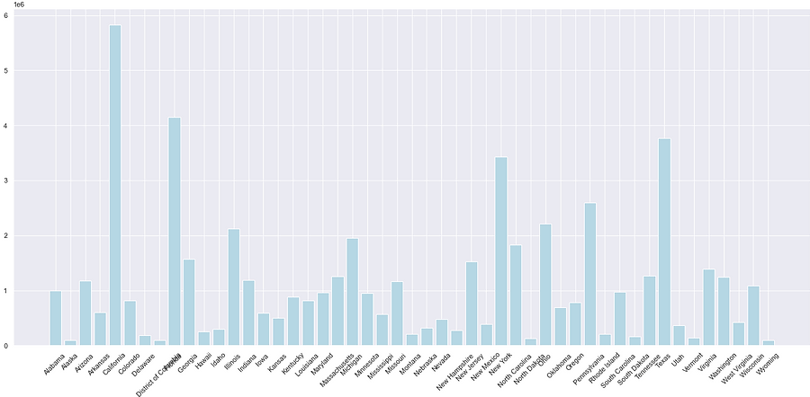

Introduction
Good health is a key part of our quality of life. In this entry we focus on healthcare – one of the most important inputs to protect and improve health. There are many other factors affecting health, and you can read more about some of them in our entries about health.
Publicly funded healthcare is a legacy of the Age of Enlightenment. The first examples of legislation on health insurance date back to the late 19th century. Data from these early systems shows that healthcare expenditure only began rising several years after the expansion of insurance coverage, with the discovery of powerful new treatments.
The impact that scientific developments had on healthcare expenditure is epitomized in the U.S. experience: in recent decades, as treatment possibilities expanded rapidly, expenditure on healthcare increased – in any way you want to measure it: private and public, both per capita and as a share of gross domestic product. This occurred without major changes in insurance coverage and had two important consequences:
(i) the U.S. currently spends more government money per person on healthcare than many countries that fund universal programs, and
(ii) spending is so concentrated that the top 1% of spenders account for more than 20% of total healthcare expenditure.
Global expenditure on healthcare as a share of world income has been increasing, steadily but slowly over the course of the last couple of decades. In the background, however, there has been substantial cross-country heterogeneity, both in levels and trends. Regionally, high-income countries spend – and have been spending – a much larger share of their income on healthcare than low-income countries (about twice as much). Moreover, in contrast to high-income countries, in low and middle-income countries the public share of healthcare funding is much lower – although it has been catching up – and the role of out-of-pocket expenditures is much higher (above 50% of total expenditure in many
Introduction to the Data
This dataset provides health insurance coverage data for each state and the nation as a whole, including variables such as the uninsured rates before and after Obamacare, estimates of individuals covered by employer and marketplace healthcare plans, and enrollment in Medicare and Medicaid programs. Health care prices are opaque, and patients and clinicians are equally in the dark about them. As Americans enroll in high-deductible health plans at unprecedented rates, the affordability of health care has received significant attention. The problem is that right now it is not clear who has the answers. The costs of delivering care are obscured in layers of jargon and complex accounting.
Pre-processing the data
To ensure that all of the data is consistent, correct, uniform, and complete, I pre-processed the dataset. However, I need to conduct a little research to obtain an adequate dataset before I actually start processing the data. My dataset was located on a website called Kaggle. I was able to import my dataset and use the Pandas and NumPy tools while preprocessing the data. I changed the object to Integer after loading the dataset and going over each column's data types. I had to enlarge the bar plot and alter the x-axis titles' rotation when making the bar graph. Lastly checking all the missing values is important so to remove all rows with null values, I simply dropped any rows with null values.
Data Understanding/Visualization
This graph shows how much the data has increased from the year 2010 to 2015.
This graph shows the data on people who have Medicare Enrollment in year of 2016 by each state.
This graph shows the data on people who have Medicare Enrollment in year of 2016 by each state.
This graph shows the data on people who have Medicaid Enrollment in year of 2016 by each state.
Storytelling/Impact
It's challenging to draw a single, unambiguous conclusion regarding the program. However, analyzing the data does enable us to draw some general conclusions. To convince the public that better plans exist, it was crucial to examine the Health Insurance dataset and observe the statistics and patterns for each health insurance. Health may suffer from a lack of insurance coverage. Adults without insurance are less likely to get preventative care for long-term problems. The value of accurate data will help companies in setting prices and providing enough coverage. The influence of analyzing a dataset on healthcare insurance is enormous for each individual. Due to their ability to quickly access large amounts of patient data information, quick and accurate database systems are essential to the healthcare industry. It is impossible to overstate how crucial data collecting is to the healthcare industry because it enables specialists to evaluate a wide range of crucial elements. Data collecting and analysis technologies are useful for gaining a greater understanding of a patient's health, managing information rapidly, and sharing it with other clinicians, whether they are utilized for private, public, or governmental affairs.